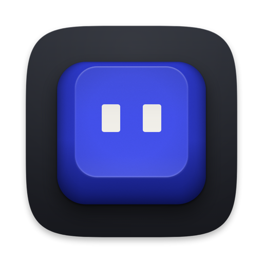

Skills and prompts, bound into libraries you can share.
Bindery keeps every skill Claude Code and Codex can read in one place. Collect the good ones into a library, share it as a folder or a repo, and let others import it after a safety check.

Build a library, share it, import it.
A library is a folder of skills and prompts with a plain list of what is in it. The same three steps work for anyone who receives it.
-
Build
Collect the skills and prompts you use into one library. Each item gets a short note on what it is best for and which app it goes to.
~/.bindery/libraries/ui-kit/library.json -
Share
Export the library as a plain folder. Send it as a zip, or push it to a git repository. Bindery does not publish anything for you.
bindery library export ui-kit ~/Desktop/ui-kit -
Import
Paste a folder or a git link. Import always shows a preview first: every item, its notes, the licence and any safety findings. Nothing changes until you confirm.
bindery library import owner/ui-kit
Read before it runs.
Every file in an imported library is scanned before anything installs. Findings are listed by level: high, medium and info.
Nothing runs during the scan. The scan matches patterns and never executes code, so read a skill before you rely on it.
Every change can be undone. Replaced and removed files move to a backup folder, and each applied import prints an ID you can reverse.
Import preview
UI kit
Four items. Two findings: one high, one medium.
scripts/setup.sh
(curl … | sh)
One copy, both apps.
Turning an app on for a skill links it to the copy the other app already has. Editing one edits both.
When two copies have drifted apart, Bindery shows them side by side. You can keep one for both apps.
Or from the command line.
The same actions as the window. Changes print a plan first and need --yes to apply.
# Show every skill across Claude Code, Codex and the shared folderbindery list# Export a library as a plain folder you can zip or push to gitbindery library export ui-kit ~/Desktop/ui-kit# Preview a library from a git link: items, notes, licence and safety findingsbindery library import owner/ui-kit# Install after reading the previewbindery library import owner/ui-kit --yes# Later: see what changed upstream before importing againbindery library update owner/ui-kit# Preview sharing one copy with Codex, then add --yes to applybindery share pr-review --with codex# Undo any applied change with the ID it printedbindery undo <txId>